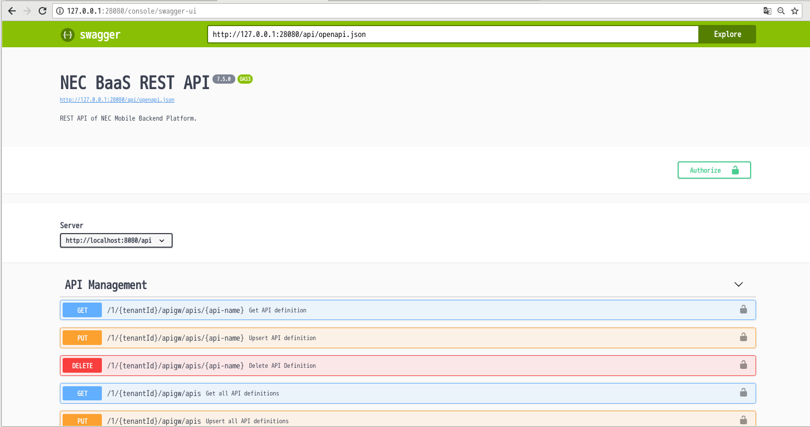
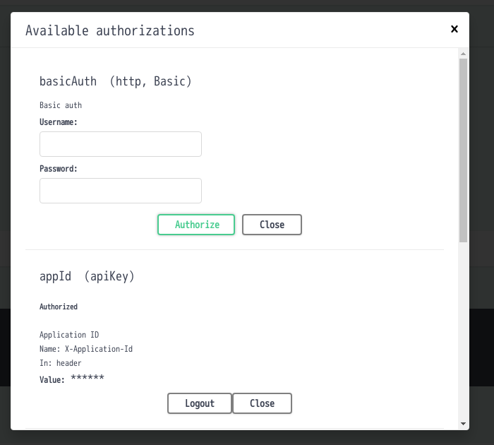
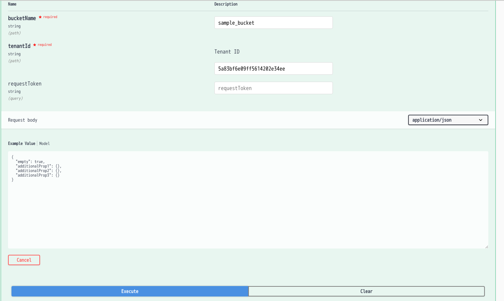
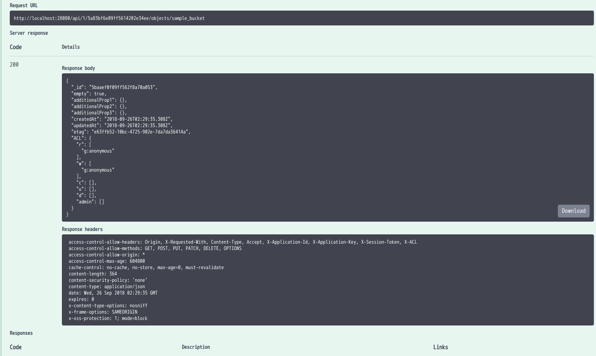

2. REST API の概要¶
REST API は、モバイルバックエンド基盤の最もプリミティブな API で、HTTPS を用いて モバイルバックエンド基盤サーバの機能を呼び出します。
なお、本文書では REST API の一部の機能についてのみ説明しています。 全 API の詳細については「REST API リファレンス」をご参照ください。
2.1. エンドポイント¶
REST API は、以下のエンドポイントに対して発行します。 {server} は、NEC BaaS を運用するサーバホスト名に適宜読み替えてください。
http://{server}/api/1
2.2. テナント, アプリケーションID, アプリケーションキー¶
REST API を発行する際は、テナントIDまたはテナント名、および アプリケーション毎に発行されたアプリケーションID とアプリケーションキーを送信する必要があります。
テナントIDまたはテナント名は API の URI に埋め込みます。以下の説明では {tenant} として 説明しています。
アプリケーションIDとアプリケーションキーは以下のとおり HTTP ヘッダに指定してください。
- X-Application-Id ... アプリケーションID
- X-Application-Key ... アプリケーションキー
アプリケーションID/アプリケーションキーはデベロッパコンソール上で確認してください。
なお、アプリケーションには「マスターキー」も払い出されます。 X-Application-Key にマスターキーを指定すると、アクセス権限を無視し、 すべてのデータにアクセスすることが可能です。 マスターキーは管理用にのみ使用してください (セキュリティ上、アプリケーションには埋め込まないでください)。
注釈
{tenant} をURIに埋め込む代わりに、"X-Tenant-Id" ヘッダに{tenant}を指定することができます。
2.3. セッショントークン¶
一部の API は、ユーザがログインした状態で呼び出す必要があります。 ユーザ管理機能の「ログイン」API を呼び出すと、サーバからセッショントークンが払い出されます。 この値を以下の HTTP ヘッダに埋め込んで送信してください。
- X-Session-Token
2.4. レスポンスフォーマット¶
REST API の呼び出し応答は、通常 JSON オブジェクト形式で返却されます。 Content-Type は "application/json" となります。
2.5. curl を用いた API の呼び出し¶
curl コマンドを用いると、簡単に API を呼び出すことができます。 以下に一例を示します。
curl -X GET \
-H "X-Appliation-Id: {app_id}" \
-H "X-Appliation-Key: {app_key}" \
https://{server}/api/1/{tenant}/users
また、Swagger-UIを使用すると、ブラウザからAPIを呼び出すことができます。
詳細は、 Open API Specification v3 とSwagger-UI を参照して下さい。
2.6. Cross Origin Resource Sharing (CORS)¶
BaaS サーバは CORS (Cross Origin Resource Sharing) に対応しています。 CORS はブラウザがオリジン(HTMLファイルをダウンロードしたサーバ) 以外のサーバに対し Ajax 通信(XMLHttpRequest)を許可するためのものです。
CORS 対応ブラウザからは、クロスドメインで Ajax 通信が可能です。
CORS の詳細については HTTP access control (CORS) | MDN などを参照してください。
NEC BaaS は以下のように動作します。
- デフォルトでは全ドメインからのクロスドメインアクセスを許可します。具体的には Access-Control-Allow-Origin を '*' で応答します。この値は、デベロッパーコンソールから変更可能です。
- クレデンシャルの送信は許可しません。Access-Control-Allow-Credentials ヘッダは送信しません。
- プリフライトリクエスト(OPTIONS)に対して以下のように応答します。
- Access-Control-Allow-Methods は GET, POST, PUT, PATCH, DELETE, OPTIONS を応答します。
- Access-Control-Allow-Headers は、Content-Type, X-Application-Id, X-Application-Key, X-Session-Token, X-Requested-With を応答します。
- Accessl-Control-Max-Age は 7日間です。
2.7. Open API Specification v3 とSwagger-UI¶
NEC BaaSは、Open API Specification v3に基づいたREST API仕様を提供しています。 以下のURIにアクセスすることで、NEC BaaSのAPI定義を参照することができます。
http://{server}/api/openapi.json
各種APIゲートウェイ製品などのツールから、NEC BaaSのREST APIを参照する場合、上記URIを指定してください。
API定義はJSONで記述されているため、そのままではユーザの参照に適しません。 デベロッパーコンソール組み込みのSwagger-UIから、"openapi.json"のURIを指定して下さい。
Swagger-UIは、以下URIからアクセスすることができます。
http://{server}/console/swagger-ui
Swagger-UIから、REST APIの一覧や、API呼び出しの確認をすることができます。 詳細は、 Swagger を参照して下さい。
{kind=link}
2.7.1. REST APIコールの例¶
Swagger-UIから、REST APIの呼び出しを行います。 例として、新規オブジェクトを作成します。
まず画面右の"Authorize"(鍵アイコン)を選択します。
ここではBaaSの接続先アプリケーションを指定します。 "X-Application-Id"、"X-Application-Key"を入力します。 これらの値は、デベロッパーコンソールから確認することができます。 その他、Basic認証や、セッショントークンを付与することもできます。
入力後、Authorizeボタンを押すと、リクエストに該当の値を付与します。
{kind=link}
JSON Object Storage => Insert object を表示し、 "Try It Out"を選択すると、API特有のパラメータ入力を行うことができます。 "bucketName"、"tenantId"を入力します。"tenantId"には、IDもしくはテナント名が使用できます。 完了後、Executeを選択します。
{kind=link}
成功するとレスポンスボディ、ヘッダが表示され、 サーバにオブジェクトが生成されます。
{kind=link}